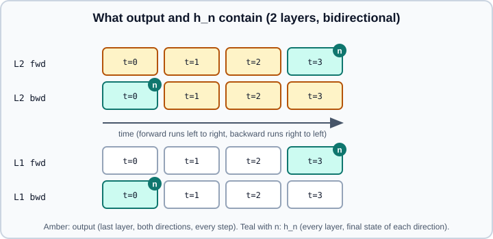

RNN, LSTM & GRU
|
This content was generated with the assistance of AI and should be verified against the official documentation before being relied on in production. |
Recurrent layers process a sequence one step at a time while carrying a hidden state that summarizes what they have seen. PyTorch provides the plain tanh or ReLU recurrence (nn.RNN), the gated long short-term memory (nn.LSTM) and the gated recurrent unit (nn.GRU), each as a multi-layer, optionally bidirectional module that runs the whole sequence in one call, plus single-step *Cell variants. The conceptual treatment (vanishing gradients, gating, why attention largely replaced recurrence) is in Recurrent Networks & Sequences. This page is about the API: what goes in, what comes out, and how to handle variable-length batches without silent mistakes.
Examples were run on Python 3.13 with PyTorch 2.15 (CPU) on 2026-10-31. The shapes in the comments are what the run printed. A full text-classification and sequence-to-sequence walkthrough is on Worked Example: Character RNN & Seq2Seq; transformers, which replaced recurrence in most state-of-the-art systems, are on Attention, SDPA, FlexAttention & Transformers.
The three layers
| Layer | Recurrence | State |
|---|---|---|
|
\(h_t = \tanh(W_{ih} x_t + b_{ih} + W_{hh} h_{t-1} + b_{hh})\); |
Hidden state \(h\) |
|
Four gates (input, forget, cell candidate, output) combine \(x_t\) and \(h_{t-1}\) to update a cell state \(c_t\) and the hidden state \(h_t\) |
Hidden state \(h\) and cell state \(c\) |
|
Reset and update gates and a candidate state; no separate cell state |
Hidden state \(h\) |
Source: https://docs.pytorch.org/docs/stable/generated/torch.nn.RNN.html, https://docs.pytorch.org/docs/stable/generated/torch.nn.LSTM.html and https://docs.pytorch.org/docs/stable/generated/torch.nn.GRU.html
The LSTM equations, with \(\sigma\) the logistic sigmoid and \(\odot\) element-wise product:
\[ \begin{aligned} i_t &= \sigma(W_{ii} x_t + b_{ii} + W_{hi} h_{t-1} + b_{hi}) \\ f_t &= \sigma(W_{if} x_t + b_{if} + W_{hf} h_{t-1} + b_{hf}) \\ g_t &= \tanh(W_{ig} x_t + b_{ig} + W_{hg} h_{t-1} + b_{hg}) \\ o_t &= \sigma(W_{io} x_t + b_{io} + W_{ho} h_{t-1} + b_{ho}) \\ c_t &= f_t \odot c_{t-1} + i_t \odot g_t \\ h_t &= o_t \odot \tanh(c_t) \end{aligned} \]
PyTorch stacks the four input-to-hidden matrices into one weight_ih_l0 of shape (4*hidden_size, input_size) in the order input, forget, cell, output (i, f, g, o), and the same for weight_hh_l0. The GRU stacks three (reset, update, new: r, z, n) into (3*hidden_size, ...). The executed snippet printed weight_ih_l0 (28, 5) for an LSTM(5, 7) and (21, 5) for a GRU(5, 7). Reading the gate order matters when you initialize a particular gate, for instance the forget-gate bias.
Gate diagrams for the LSTM are in Recurrent Networks & Sequences. The GRU reduces parameters by about a quarter relative to the LSTM (three gate blocks instead of four) and often performs similarly; choose by validation score.
Arguments
All three share input_size, hidden_size, num_layers=1, bias=True, batch_first=False, dropout=0.0, bidirectional=False. nn.RNN adds nonlinearity ('tanh' or 'relu'), and nn.LSTM adds proj_size=0.
-
num_layersstacks recurrent layers: the output sequence of layer \(l\) is the input sequence of layer \(l+1\). -
batch_first=Truemakes input and output(batch, seq, feature). The default is(seq, batch, feature). This flag does not change the layout ofh_nandc_n, which are always(num_layers * num_directions, batch, hidden). -
dropoutapplies dropout to the outputs of every layer except the last, so it has no effect withnum_layers=1(PyTorch warns when you set it that way). -
bidirectional=Trueruns a second recurrence over the reversed sequence and concatenates the two outputs on the feature axis, so the output feature size doubles. -
proj_size(LSTM only) projects the hidden state to a smaller size:hthen hasproj_sizefeatures whileckeepshidden_size.
Shapes: input, output and state
With \(N\) = batch, \(L\) = sequence length, \(H_{in}\) = input_size, \(H\) = hidden_size, \(D\) = 2 if bidirectional else 1 and \(K\) = num_layers:
| Tensor | Shape |
|---|---|
input |
|
output |
|
|
|
|
|
|
Same shapes as |
import torch
import torch.nn as nn
B, T, D, H, L = 4, 6, 5, 7, 2
x = torch.randn(B, T, D)
rnn = nn.RNN(D, H, num_layers=L, batch_first=True)
out, h = rnn(x)
print("RNN ", out.shape, h.shape) # [4, 6, 7] [2, 4, 7]
lstm = nn.LSTM(D, H, num_layers=L, batch_first=True, bidirectional=True)
out, (h, c) = lstm(x)
print("LSTM", out.shape, h.shape, c.shape) # [4, 6, 14] [4, 4, 7] [4, 4, 7]
gru = nn.GRU(D, H, num_layers=L, batch_first=True, dropout=0.1)
out, h = gru(x)
print("GRU ", out.shape, h.shape) # [4, 6, 7] [2, 4, 7]
# unbatched input: (L, D)
o, (hh, cc) = nn.LSTM(D, H)(torch.randn(T, D))
print(o.shape, hh.shape) # [6, 7] [1, 7]
# proj_size: h is smaller than c
o, (hh, cc) = nn.LSTM(D, H, proj_size=3)(torch.randn(T, B, D))
print(o.shape, hh.shape, cc.shape) # [6, 4, 3] [1, 4, 3] [1, 4, 7]What output and h_n contain
In a unidirectional, single-layer network the last element of output along the time axis equals h_n[-1]; the executed check printed True. In a bidirectional network the two directions end at opposite sides of the sequence: the forward direction’s final state is at the last time step, but the backward direction’s final state is at the first time step (it has just finished reading the sequence backwards). So h_n[-2] equals output[:, -1, :H] and h_n[-1] equals output[:, 0, H:], both verified in the executed snippet.

out, (h, c) = lstm(x) # bidirectional, 2 layers
print(torch.allclose(h[-2], out[:, -1, :H])) # True: forward, last layer, last step
print(torch.allclose(h[-1], out[:, 0, H:])) # True: backward, last layer, first step
# Representation of the whole sequence from the last layer: concatenate both directions
final = torch.cat([h[-2], h[-1]], dim=1) # [batch, 2*H]
print(final.shape) # torch.Size([4, 14])
# Separate layers and directions: view as (num_layers, num_directions, batch, hidden)
print(h.view(L, 2, B, H).shape) # torch.Size([2, 2, 4, 7])For classification, use the last layer’s final state (h_n[-1] unidirectional, or the concatenation above). For sequence labelling and for attention over encoder states, use the whole output.
Cell-level control
nn.RNNCell, nn.LSTMCell and nn.GRUCell compute a single time step: h, c = cell(x_t, (h, c)). Use them when each step needs custom logic (teacher forcing, scheduled sampling, feeding the previous prediction, attention over previous states). The full-sequence layers use fused kernels and are much faster when you do not need that control. The cell’s weights follow the same layout, so the cell and the layer give the same numbers; the executed check copied an LSTMCell’s weights into a one-layer LSTM and the outputs matched. The gate equations can also be reproduced by hand:
cell = nn.LSTMCell(D, H)
W_ih, W_hh = cell.weight_ih, cell.weight_hh
b = cell.bias_ih + cell.bias_hh
xt = torch.randn(1, D)
h0, c0 = torch.zeros(1, H), torch.zeros(1, H)
gates = xt @ W_ih.T + h0 @ W_hh.T + b
i, f, g, o = gates.chunk(4, dim=1) # PyTorch's gate order: i, f, g, o
c1 = torch.sigmoid(f) * c0 + torch.sigmoid(i) * torch.tanh(g)
h1 = torch.sigmoid(o) * torch.tanh(c1)
print(torch.allclose(h1, cell(xt, (h0, c0))[0], atol=1e-5)) # TrueVariable-length sequences: padding and packing
Batches need equal lengths, so shorter sequences are padded. The recurrence would then run over padding, which corrupts h_n (it would hold the state after the padded steps) and wastes computation. PyTorch’s solution is the packed sequence: pad_sequence builds the padded batch, pack_padded_sequence tells the RNN each sequence’s true length, and pad_packed_sequence turns the result back into a padded tensor.
from torch.nn.utils.rnn import pad_sequence, pack_padded_sequence, pad_packed_sequence
seqs = [torch.randn(n, D) for n in (6, 4, 2, 5)] # four sequences, different lengths
lengths = torch.tensor([len(s) for s in seqs]) # lengths stay on the CPU
padded = pad_sequence(seqs, batch_first=True) # [4, 6, 5], zero padded
packed = pack_padded_sequence(padded, lengths, batch_first=True, enforce_sorted=False)
print(type(packed).__name__, packed.data.shape, packed.batch_sizes)
# PackedSequence torch.Size([17, 5]) tensor([4, 4, 3, 3, 2, 1])
lstm2 = nn.LSTM(D, H, batch_first=True)
out_packed, (hn, cn) = lstm2(packed) # accepts a PackedSequence directly
out, out_len = pad_packed_sequence(out_packed, batch_first=True, total_length=T)
print(out.shape, out_len) # [4, 6, 7] tensor([6, 4, 2, 5])
print(out[2, 2:].abs().sum().item()) # 0.0: padded steps are zeros
# h_n is the state at the last VALID step of each sequence
print(torch.allclose(hn[0, 2], out[2, 1])) # True (sequence 2 has length 2)
# Without packing, h_n comes from the padded step and differs from the packed result
o_np, (hn_np, _) = lstm2(padded)
print(torch.allclose(hn_np[0, 2], hn[0, 2])) # FalseDetails:
-
enforce_sorted=True(the default) requires sequences sorted by decreasing length;enforce_sorted=Falsesorts internally andpad_packed_sequencerestores the original order. The packed object recordssorted_indices(for the lengths above,[0, 3, 1, 2]). -
lengthsmust be on the CPU (a tensor or a list); a CUDA tensor raises an error. -
total_lengthinpad_packed_sequencekeeps the padded length constant, which matters withDataParalleland when you want a fixed shape. -
pack_sequencebuilds aPackedSequencedirectly from a list of tensors. -
To select the last valid output of each sequence from a padded output, gather with
lengths - 1; the executed check confirmed that this equalsh_n[0]for a one-layer unidirectional LSTM.
Source: https://docs.pytorch.org/docs/stable/generated/torch.nn.utils.rnn.pack_padded_sequence.html and https://docs.pytorch.org/docs/stable/generated/torch.nn.utils.rnn.pad_packed_sequence.html
Masking the loss is the other half of the job: when you compute a per-step loss over a padded output, exclude the padded positions (an ignore_index for CrossEntropyLoss, or a mask), otherwise the model is trained to predict padding. For a bidirectional layer, packing is essential, because without it the backward direction starts reading at the padding.
Truncated backpropagation through time
Training on a very long sequence in one pass is memory-hungry and unstable. Truncated backpropagation through time splits the sequence into chunks, carries the hidden state from one chunk to the next, but detaches it so gradients do not flow back across chunk boundaries:
gru = nn.GRU(D, H, batch_first=True)
h = None
for chunk in x.split(2, dim=1): # chunks of two time steps
out, h = gru(chunk, h)
h = h.detach() # cut the graph between chunks
# ... compute the loss on `out`, call backward, step the optimizer ...
print(h.shape) # torch.Size([1, 4, 7])For an LSTM detach both elements of the tuple (h = tuple(s.detach() for s in h)). Forgetting detach() makes each chunk’s backward pass traverse all earlier chunks and eventually raises "Trying to backward through the graph a second time" or exhausts memory (see no_grad, inference_mode & Grad Modes for detach).
Initialization, regularization and stability
-
Defaults: every weight and bias is drawn uniformly from \([-1/\sqrt{H}, 1/\sqrt{H}]\) with \(H\) the hidden size; with
torch.manual_seed(0), annn.LSTM(5, 7)has a maximum weight magnitude of 0.3778 against \(1/\sqrt{7} = 0.3780\). -
Common improvements: orthogonal recurrent matrices (
nn.init.orthogonal_on each gate block ofweight_hh_l*), and a forget-gate bias of 1 so the cell remembers by default. Because PyTorch concatenates the gates asi, f, g, o, the forget-gate block of a bias vector isbias[H:2*H]. Bothbias_ihandbias_hhexist, so the effective bias is their sum. -
Gradient clipping is standard for recurrent models:
torch.nn.utils.clip_grad_norm_(model.parameters(), max_norm)afterbackward()and before the optimizer step (see Training Deep Networks for the reasoning, and Training Loop & Evaluation). -
Dropout between layers is built in (
dropout); dropout on the recurrent connection itself (variational dropout) is not provided bynn.LSTM. Layer normalization of the gates is not built in either. -
Weight sharing and performance: after you replace parameters by hand on a GPU, recurrent modules may warn that weights are not part of a single contiguous chunk of memory; calling
module.flatten_parameters()compacts them for the fused cuDNN kernel. -
Determinism: cuDNN recurrent kernels can be non-deterministic; see Reproducibility & Determinism.
for name, p in lstm.named_parameters():
if "weight_hh" in name:
for k in range(4): # four gate blocks of H rows each
nn.init.orthogonal_(p.data[k * H:(k + 1) * H])
elif "bias" in name:
p.data.zero_()
p.data[H:2 * H] = 1.0 # forget gate bias (gate order i, f, g, o)
loss = lstm(x)[0].pow(2).mean()
loss.backward()
total_norm = torch.nn.utils.clip_grad_norm_(lstm.parameters(), 1.0)Choosing and alternatives
Recurrent layers remain useful for small models, streaming and online inference with constant memory per step, and time-series problems with modest data; for long-range dependencies and large-scale text they have been largely replaced by attention-based models. For convolutional alternatives for sequences use nn.Conv1d (see Linear, Convolution & Pooling Layers), and for text, embeddings (see Embeddings, Normalization, Dropout & Activations). Export and compilation of recurrent layers have their own limits; the 2.11 release notes mention LSTM and GRU export support on GPU, which should be checked against the export page before relying on it (see torch.export).
Common pitfalls
-
Mixing up
batch_first: the default(seq, batch, feature)silently treats the batch as time steps when you pass(batch, seq, feature), and the shapes still line up. -
Assuming
h_nis(batch, layers, hidden); it is(layers*directions, batch, hidden)regardless ofbatch_first. -
Taking
output[:, -1]from a padded batch, which is the padded step for shorter sequences; pack or gather by length. -
Using the bidirectional layer’s
output[:, -1]as a sequence summary: the backward half has seen only one element at that point. -
Setting
dropoutwith a single layer, which has no effect. -
Not detaching the hidden state between batches when carrying it across batches or chunks.
-
Passing only
h_0to an LSTM instead of the tuple(h_0, c_0). -
Using a sorted-lengths requirement incorrectly: with
enforce_sorted=Truethe lengths must be in decreasing order. -
Forgetting gradient clipping and then seeing sudden loss spikes.